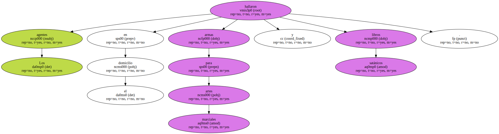
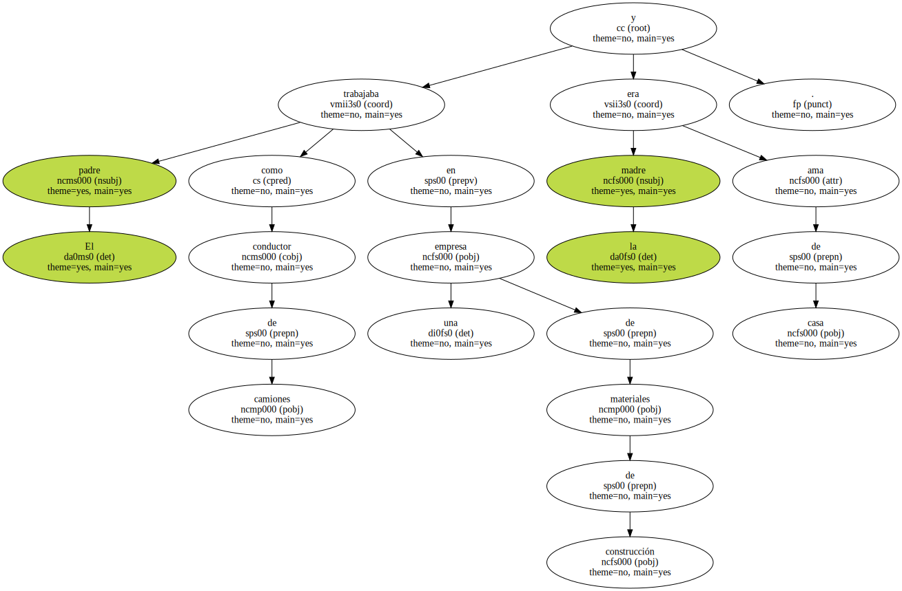
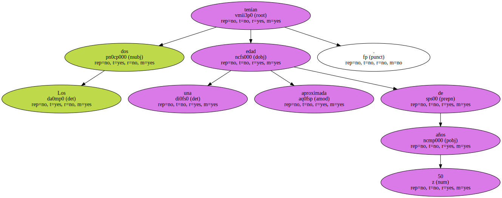
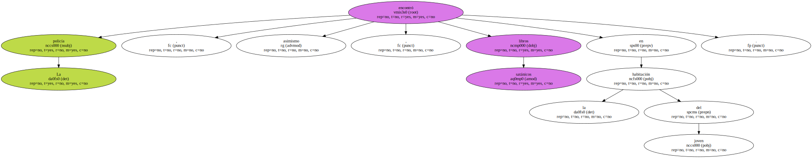
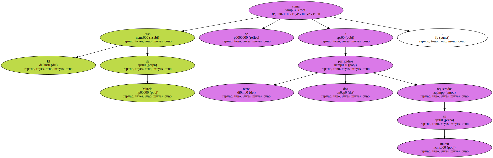
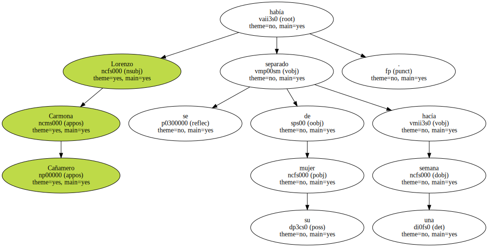
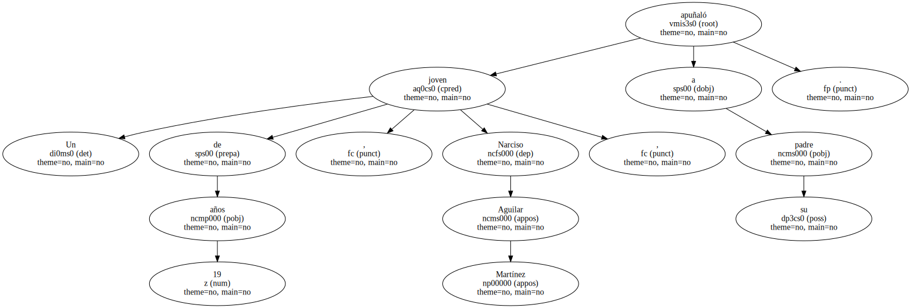
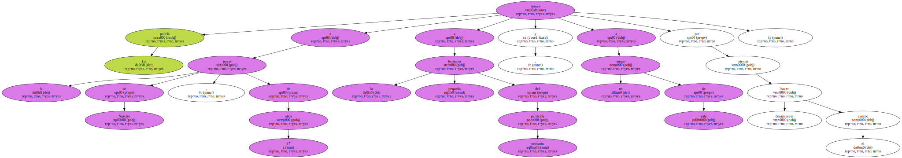

Los agentes hallaron en el domicilio armas para artes marciales y libros satánicos.
La policía busca a un joven de 17 años , vecino de Murcia , como presunto autor de la muerte de sus padres y de su hermana de 9 años.
Los cuerpos del matrimonio , formado por Rafael R. T. y Mercedes P. P. , y de su hija fueron localizados ayer a las cinco de la tarde en el interior de su domicilio , en la calle de Santa Rosa del barrio de Santiago el Mayor.
La policía encontró en la vivienda un hacha y varias armas típicas de artes marciales que podrían haber sido empleadas por el presunto parricida para matar a sus familiares.
Según fuentes policiales , los cadáveres del padre y de la niña estaban en el cuarto de baño , mientras que el de la madre se encontraba en la habitación de la pequeña , que sufría síndrome de Down.
La vivienda presentaba rastros de sangre , como si el autor o los autores hubieran trasladado los cadáveres de un lugar a otro de la casa.
El padre trabajaba como conductor de camiones en una empresa de materiales de construcción y la madre era ama de casa.
Los dos tenían una edad aproximada de 50 años.
Los vecinos confirmaron que el hijo mayor , de 17 años y que estudiaba en el instituto Mariano Vaquero , practicaba desde hacía cinco años artes marciales.
Un amigo del padre dijo que Rafael le había comprado recientemente a su hijo armas de lucha.
La policía , asimismo , encontró libros satánicos en la habitación del joven.
Otros vecinos de la familia aseguraron que hace unos meses , y por problemas con los estudios , el joven , de carácter tímido , se marchó de casa , aunque regresó poco después.
Un vecino que escuchó por la mañana los gritos de la pequeña fue quien alertó a la policía.
Después de varias horas llamando a la puerta de la vivienda e intentando conectar con la familia por teléfono , el vecino decidió exponer sus sospechas a los agentes.
El caso de Murcia se suma a otros dos parricidios registrados en marzo.
El primero se produjo el día 14 en Castell-Platja d'Aro ( Baix Empordà ) , cuando un hombre de 34 años mató a sus dos hijas gemelas con una escopeta de caza y después se suicidó.
Lorenzo Carmona Cañamero se había separado de su mujer hacía una semana.
El segundo suceso tuvo lugar en Sant Vicenç dels Horts ( Baix Llobregat ).

Un joven de 19 años , Narciso Aguilar Martínez , apuñaló a su padre.
La policía detuvo a la novia de Narciso , de 17 años , a la hermana pequeña del presunto parricida y a un amigo de ésta por intentar hacer desaparecer el cuerpo.
